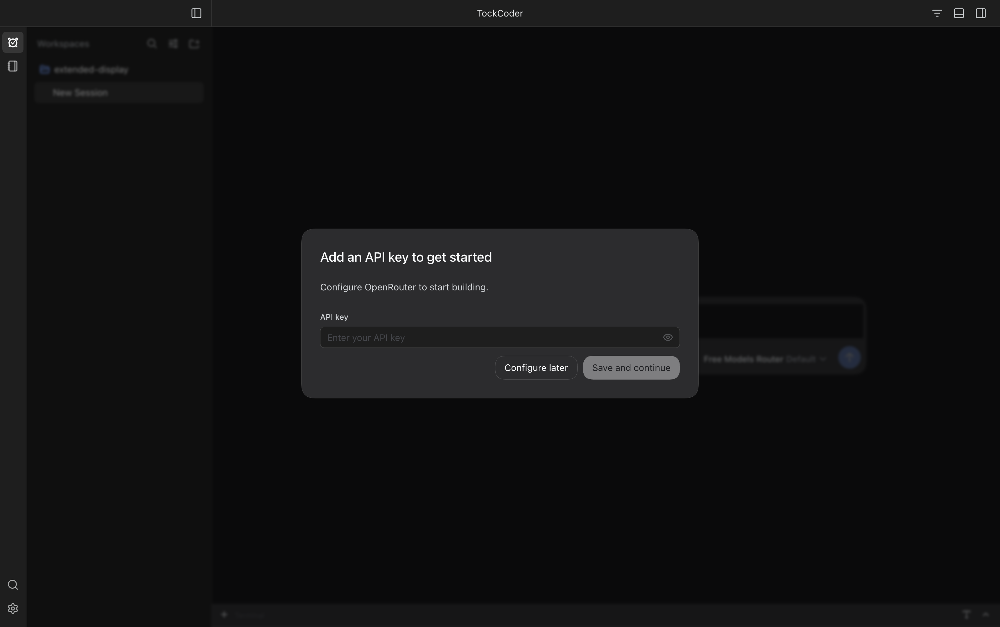

API Key Setup
New, Empty Profile · September 27, 2026
One setup screen: add an OpenRouter API key or configure it later. This is a real Desktop capture from a clean test profile, not a working form. Your saved key and settings are untouched. Click the image to inspect it at full resolution.
1512 × 949 CSS Pixels · 2× Scale · 3024 × 1898 PNG · Built-In Dark Theme · No Active Skin
